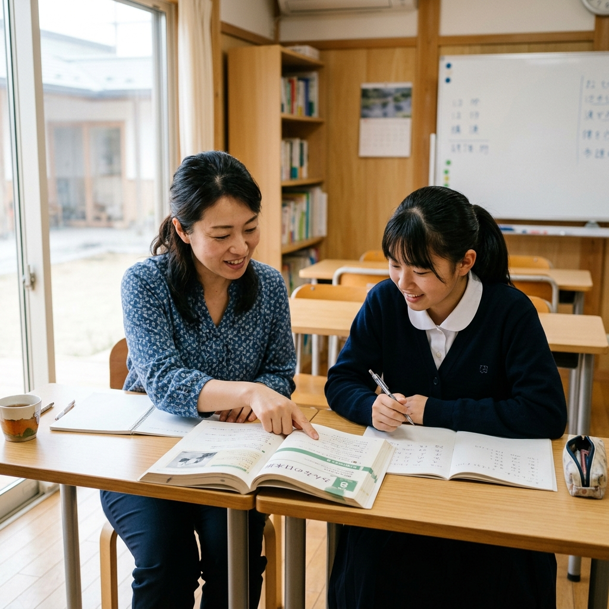
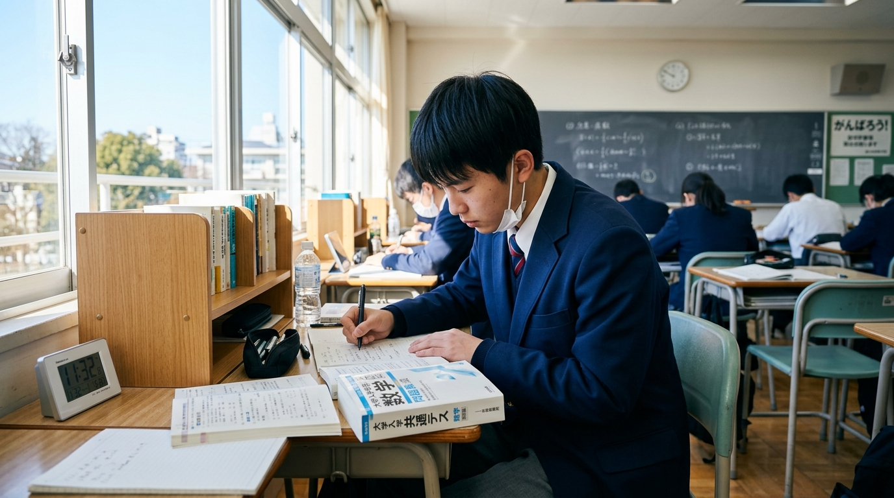
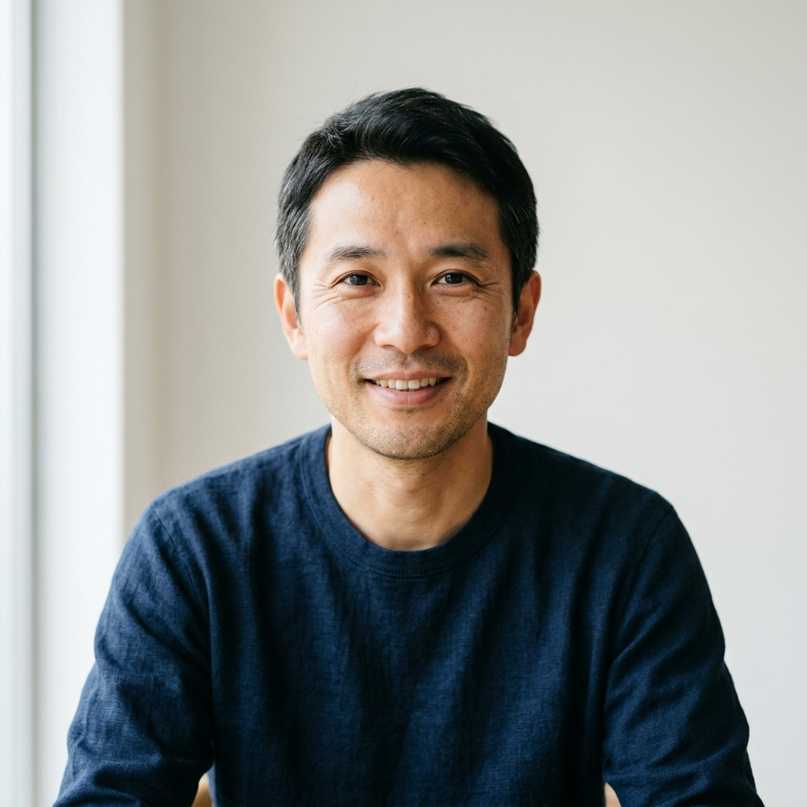
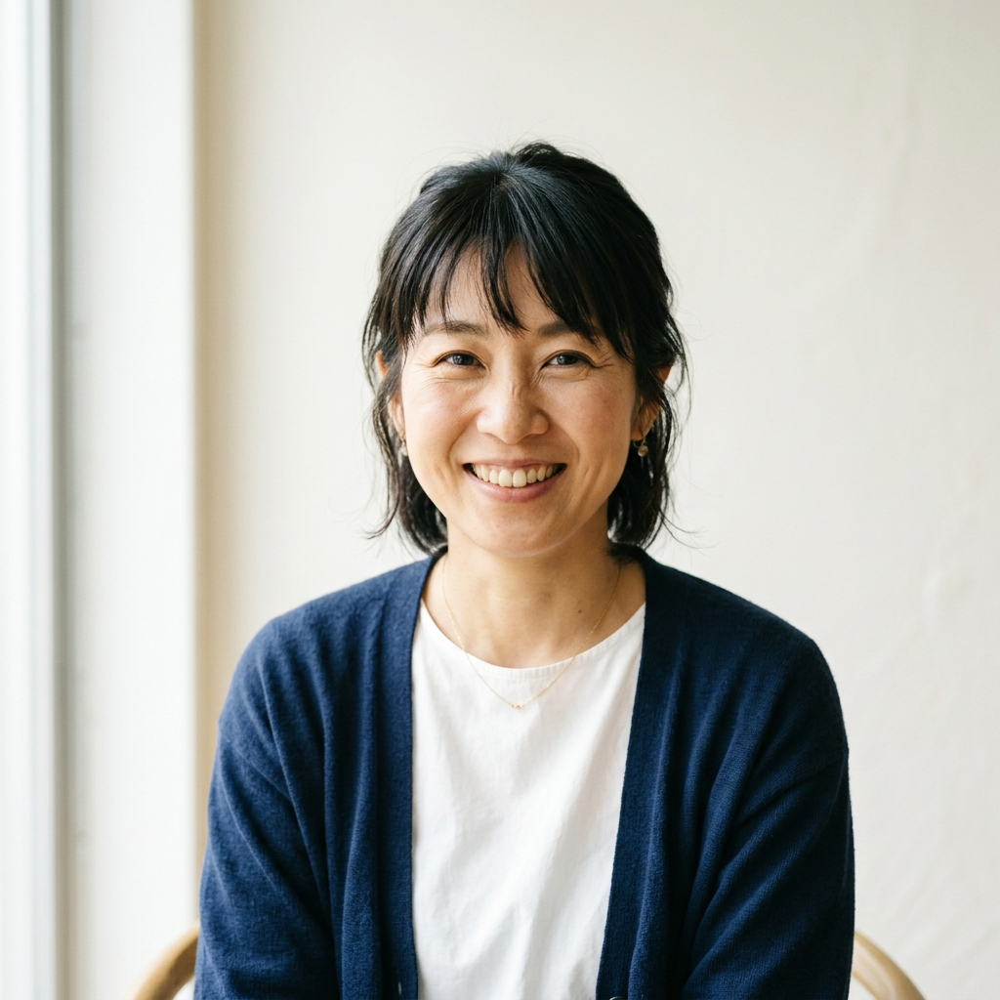
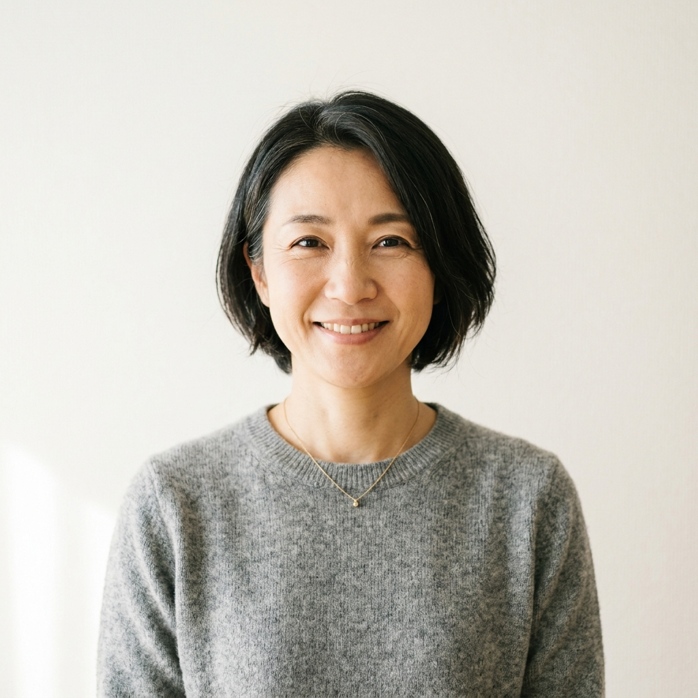

「このままの勉強で、志望校に届くのだろうか」。そんな保護者の不安に、北野スクールは正面から向き合います。お子さま一人ひとりの現在地を見極め、合格までの道すじを一緒に描きます。
無理な勧誘は一切いたしません。まずはお子さまの状況をお聞かせください。
受験を控えたご家庭から、私たちがよくいただくご相談です。
受験まで時間がない
受験が近づいてきたのに、何から手をつければいいか分からず、焦りだけが募っている。
学びを加速させたい
塾には通っているものの、成績が伸び悩んでいる。今のやり方で本当に間に合うのか不安。
志望校に合格させたい
子どもが本気で目指す志望校がある。親としてできる限りのことをしてあげたい。
その不安、北野スクールが一緒に解決します。
ご相談は無料です。合格までにやるべきことが、きっと見えてきます。
しつこい勧誘はありません今すぐ無料相談する「信頼できる、でも親しみやすい」。ご家庭が安心して子どもを預けられる塾であり続けます。

1,200名
これまでの累計指導生徒数
95%
第一志望・志望校合格率
98%
保護者アンケート満足度
※上記の数値はデザイン確認用のサンプルです。公開時には実際の実績値と、その集計期間・出典に差し替えてご使用ください。
中学生・高校生、それぞれの目標に合わせたコースをご用意しています。
高校受験・定期テスト対策

大学受験・定期テスト対策
一人ひとりの状況に合わせて
現在の学習状況をお聞きし、最適な学び方を一緒に考えます。
ご相談だけでも歓迎です今すぐ無料相談する北野スクールで学んだ生徒と、保護者の方からいただいた声です。

どこでつまずいているのかを丁寧に見つけてくださり、そこから指導してもらえたのが大きかったです。担任の先生が毎週様子を教えてくれるので、親としても安心して任せられました。
授業の時間を柔軟に調整していただけたので、部活を続けながら受験勉強を進められました。子ども自身が「自分から勉強するようになった」のが一番の変化です。

わからないことをすぐ質問できる環境で、勉強への苦手意識がなくなったようです。定期テストの点数も上がり、本人の自信につながっています。

進路について親子で迷っていたとき、担任の先生が一緒に考えてくださいました。今やるべきことがはっきりして、子どもも落ち着いて勉強に取り組めています。
※掲載している体験談はデザイン確認用のサンプルです。公開時には実際にいただいたお声に差し替えてご使用ください。
お問い合わせから受講開始まで、4つのステップで進みます。
フォームまたはお電話でお申し込みください。お子さまの現在の学習状況やお悩みをお聞かせいただきます。
お子さま一人ひとりに合わせた学習プランと、料金についてご説明します。ご不明な点は何でもご質問ください。
ご希望の条件や相性を考慮して、お子さまに合った講師を選定します。
初回授業から、合格に向けた学習が始まります。担任がご家庭を継続的にサポートします。
JR大阪駅からすぐ。通いやすい場所で、お子さまの学びをお待ちしています。
ご相談は無料です。合格までの道すじを、一緒に描いていきましょう。
入力はカンタン・費用は一切かかりません今すぐ無料相談するお電話でのご相談は 0120-000-000（受付 14:00〜22:00）